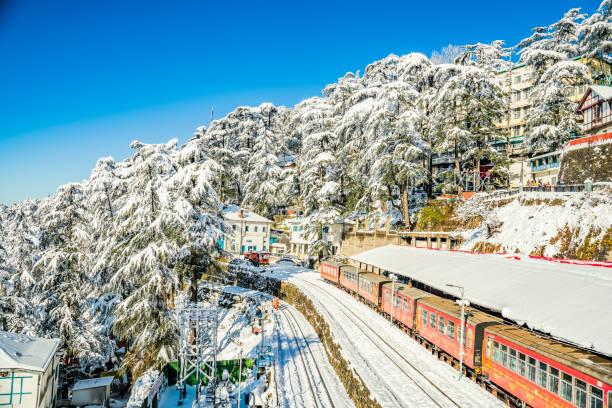
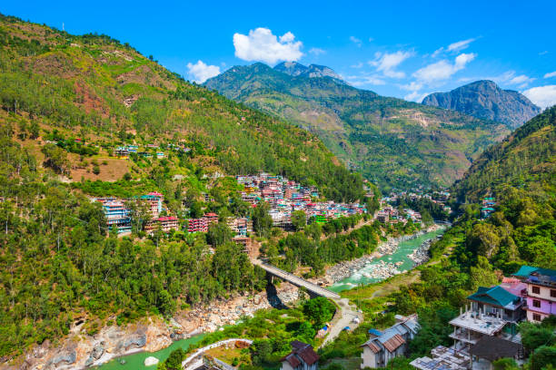
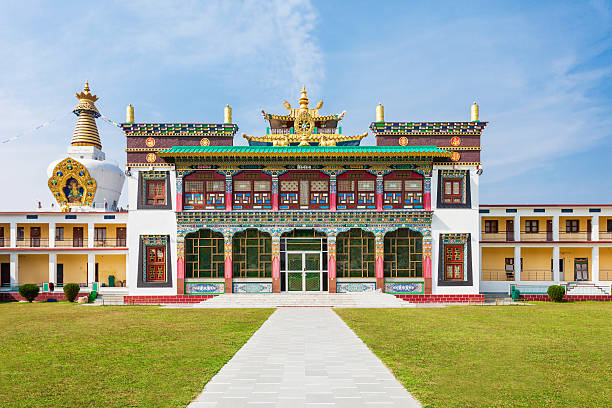
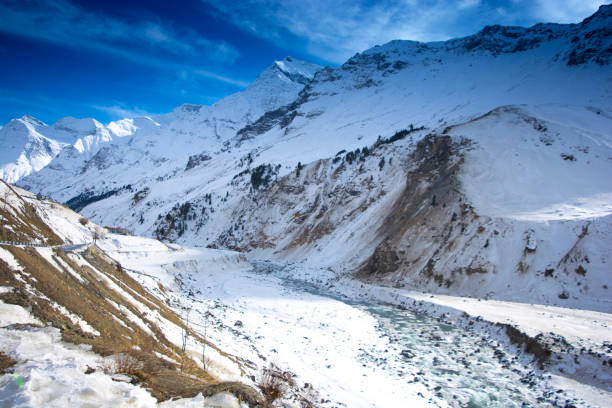
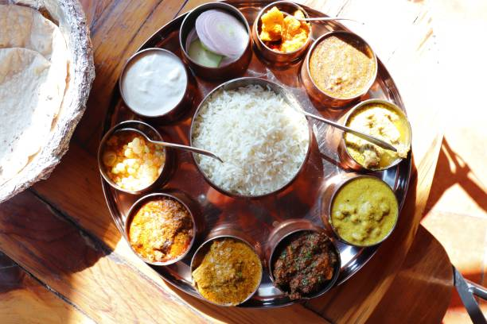

01
Shimla
The Queen of Hills — famous for the UNESCO Kalka-Shimla Toy Train, Viceregal Lodge, The Ridge, and snow-dusted pine panoramas.

Discover snow-capped Himalayan ridges, cedar-scented valleys, historic colonial hill towns, high-altitude desert monasteries, and vibrant mountain cultures.
Explore Himachal Pradesh ↓Himachal Pradesh, revered as Devbhoomi (Land of the Gods), is an alpine paradise in the Western Himalayas known for apple orchards, gushing rivers, and peaceful Tibetan Buddhist sanctuaries.
From the heritage promenade of Shimla and adventure-filled valleys of Manali to the spiritual exile seat of Dharamshala and the surreal high-altitude terrain of Spiti Valley, Himachal offers unforgettable mountain journeys.
Top alpine towns, spiritual hubs, and high-altitude valleys across Himachal Pradesh.

The Queen of Hills — famous for the UNESCO Kalka-Shimla Toy Train, Viceregal Lodge, The Ridge, and snow-dusted pine panoramas.

An adventure sanctuary in Kullu Valley — famous for Rohtang Pass, Solang Valley winter sports, Hadimba Temple, and river rafting.

Little Lhasa under the Dhauladhar range — home to the Dalai Lama, Tibetan monasteries, Bhagsu waterfalls, and Triund trek trails.

The Middle Land — a barren high-altitude desert featuring ancient Key Monastery, Chandratal Lake, and fossil villages.
Himachali cuisine is deeply comforting and aromatic — emphasizing slow yogurt-infused gravies, fermented breads, whole spices, and rich ghee.

A Guinness-recognized community circular folk dance performed with graceful synchronized steps in traditional Kullu attire.
A week-long international congregation where hundreds of local village deities (Devtas) arrive at Dhalpur Maidan in palanquins.
GI-tagged handwoven woollen shawls and distinctive green-velvet Himachal caps (Topi) adorned with colorful geometric borders.
Indigenous earthquake-resistant timber-and-stone interlocking construction style seen in ancient temples like Naggar Castle.
Discover all 28 states, local food specialties, and centuries of living traditions.
← Back to All States